Soru 1Cevap: D
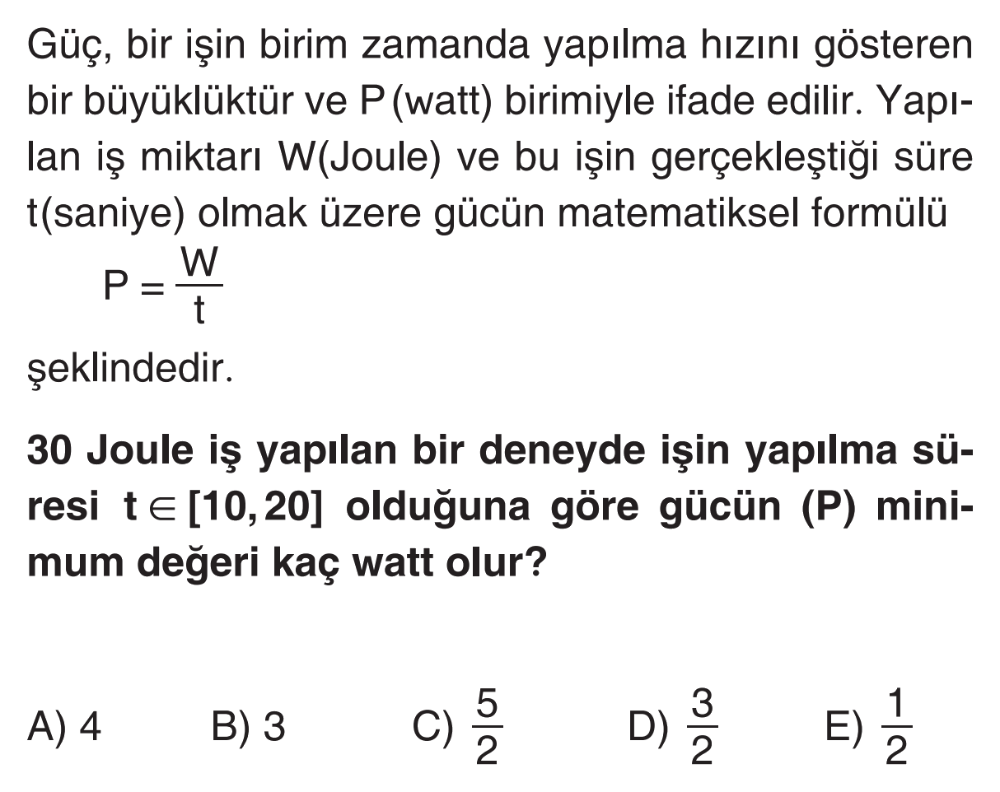
Çözüm
- $P(t)=\dfrac{30}t$, $t\gt0$'da azalan.
- En küçük değer aralığın sağ ucunda, $t=20$'de.
- $P(20)=\dfrac{30}{20}=\dfrac32$ (D).
Cevap: D
Soru 2Cevap: D
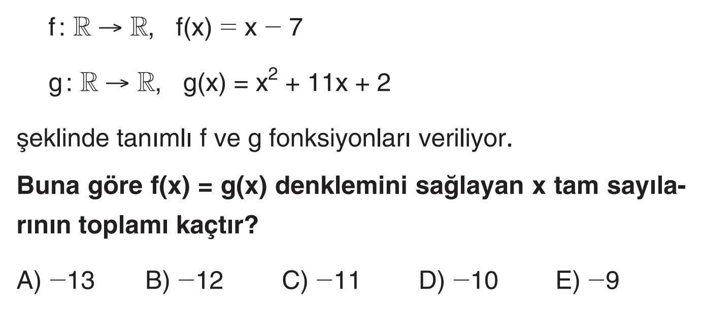
Çözüm
- $x-7=x^2+11x+2\Rightarrow x^2+10x+9=0$.
- $(x+1)(x+9)=0\Rightarrow x=-1$ ya da $x=-9$.
- Toplam $-10$ (D).
Cevap: D
Soru 3Cevap: B
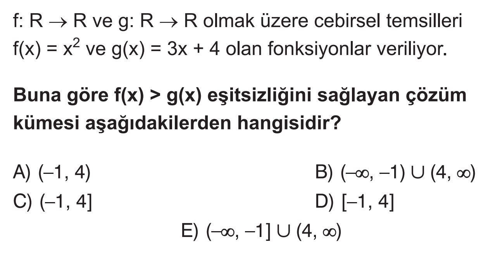
Çözüm
- $x^2\gt3x+4\Rightarrow x^2-3x-4\gt0$.
- $(x-4)(x+1)\gt0$.
- $(-\infty,-1)\cup(4,\infty)$ (B).
Cevap: B
Soru 4Cevap: D
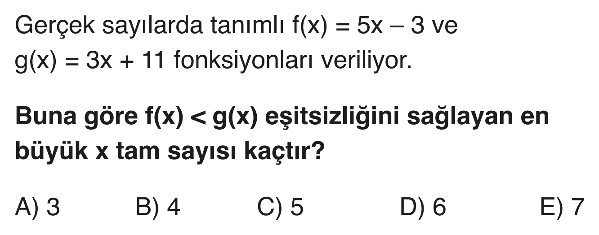
Çözüm
- $5x-3\lt3x+11$.
- $2x\lt14\Rightarrow x\lt7$.
- En büyük tam sayı $6$ (D).
Cevap: D
Soru 5Cevap: C
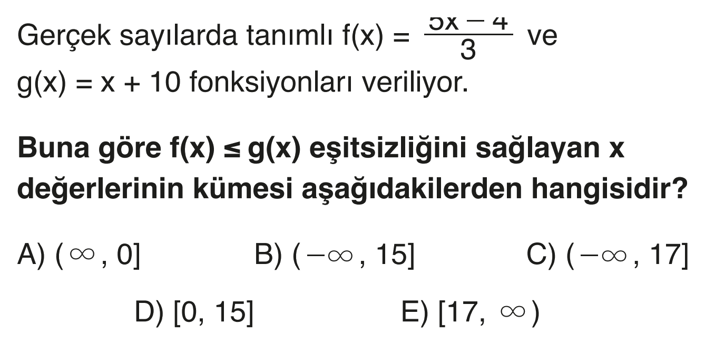
Çözüm
- $\dfrac{5x-4}3\le x+10\Rightarrow5x-4\le3x+30$.
- $2x\le34\Rightarrow x\le17$.
- Çözüm $(-\infty,17]$ (C).
Cevap: C
Soru 6Cevap: C
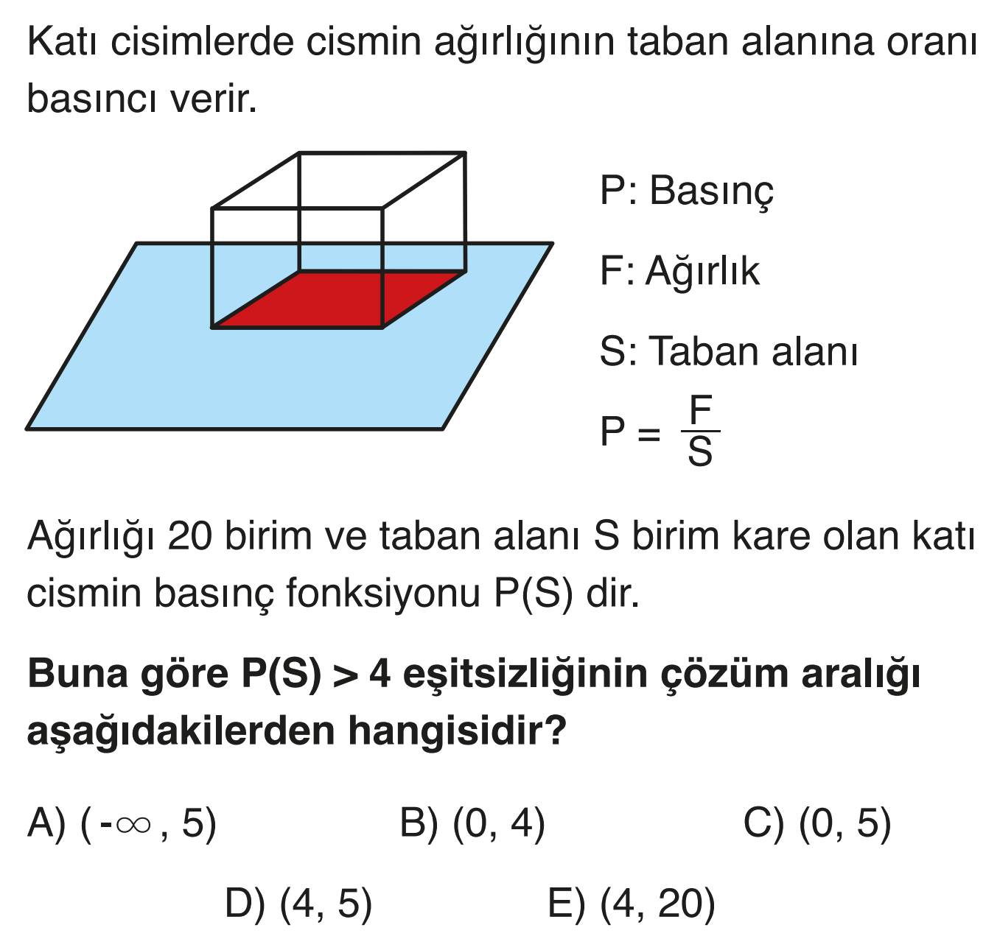
Çözüm
- $P(S)=\dfrac{20}S\gt4$, $S\gt0$.
- $20\gt4S\Rightarrow S\lt5$.
- Çözüm $(0,5)$ (C).
Cevap: C
Soru 7Cevap: B
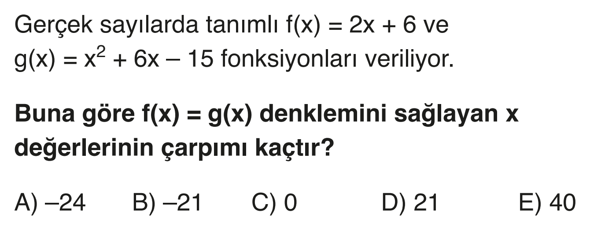
Çözüm
- $2x+6=x^2+6x-15\Rightarrow x^2+4x-21=0$.
- $(x+7)(x-3)=0$.
- Kökler $-7$ ve $3$; çarpım $-21$ (B).
Cevap: B
Soru 8Cevap: A
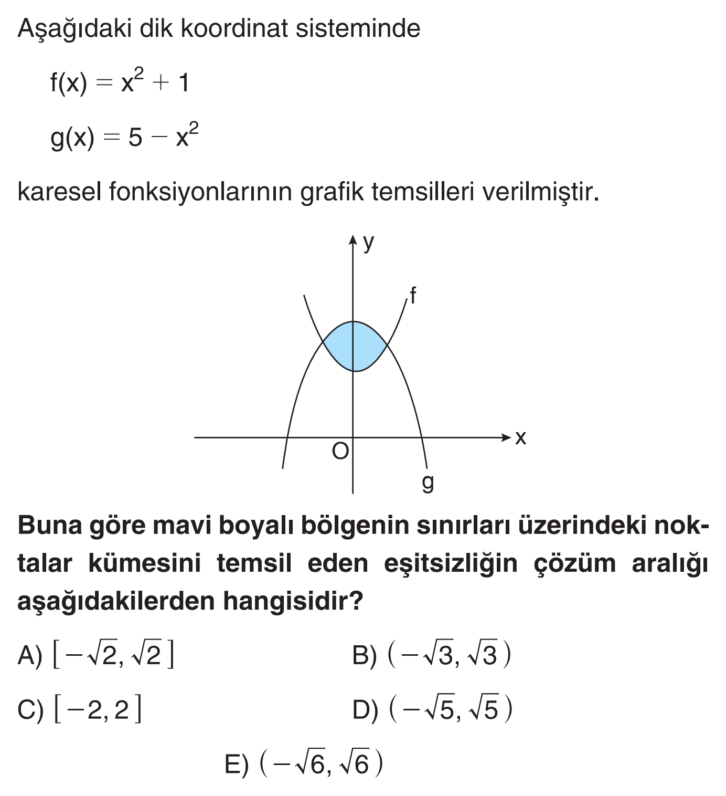
Çözüm
- Mavi bölge $f(x)\le g(x)$ olan yerdir: $x^2+1\le5-x^2$.
- $2x^2\le4\Rightarrow x^2\le2$.
- Çözüm $[-\sqrt2,\sqrt2]$ (A).
Cevap: A
Soru 9Cevap: C
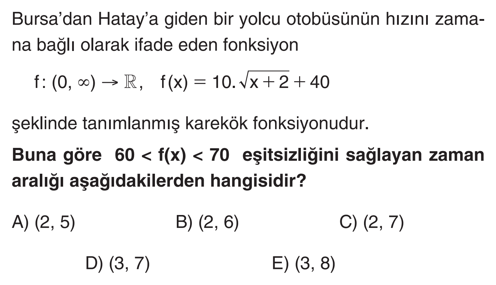
Çözüm
- $60\lt10\sqrt{x+2}+40\lt70\Rightarrow2\lt\sqrt{x+2}\lt3$.
- $4\lt x+2\lt9$.
- $2\lt x\lt7$: $(2,7)$ (C).
Cevap: C
Soru 10Cevap: E
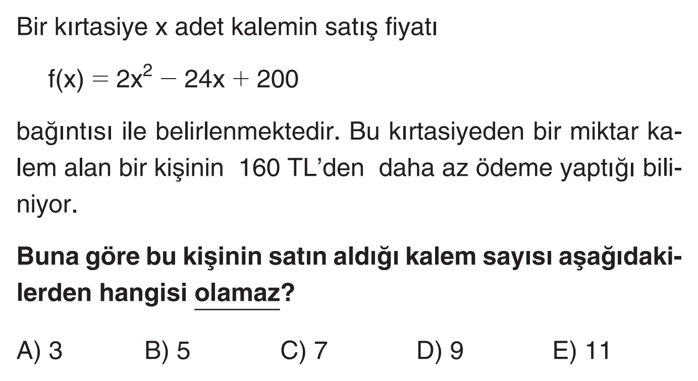
Çözüm
- $2x^2-24x+200\lt160\Rightarrow x^2-12x+20\lt0$.
- $(x-2)(x-10)\lt0\Rightarrow2\lt x\lt10$.
- $11$ kalem olamaz (E).
Cevap: E
Soru 11Cevap: D
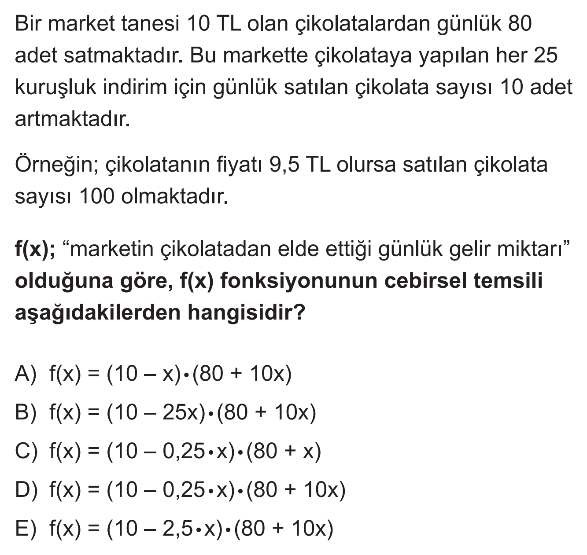
Çözüm
- $x$ tane 25 kuruşluk indirimde fiyat $10-0{,}25x$ TL olur.
- Her indirimde satış 10 artar: satış $80+10x$.
- Gelir = fiyat × satış: $f(x)=(10-0{,}25x)(80+10x)$ (D).
Cevap: D
Soru 12Cevap: D
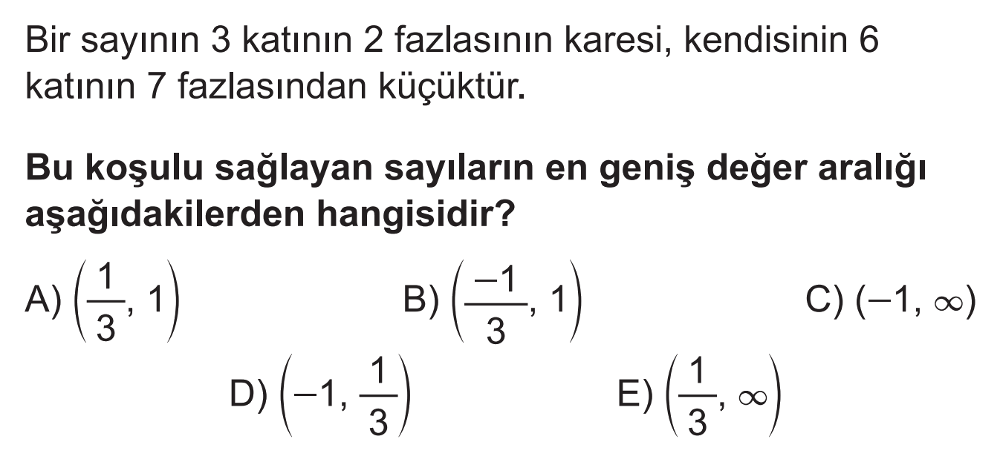
Çözüm
- $(3x+2)^2\lt6x+7\Rightarrow9x^2+12x+4\lt6x+7$.
- $9x^2+6x-3\lt0\Rightarrow3x^2+2x-1\lt0\Rightarrow(3x-1)(x+1)\lt0$.
- Çözüm $\left(-1,\dfrac13\right)$ (D).
Cevap: D
Soru 13Cevap: C
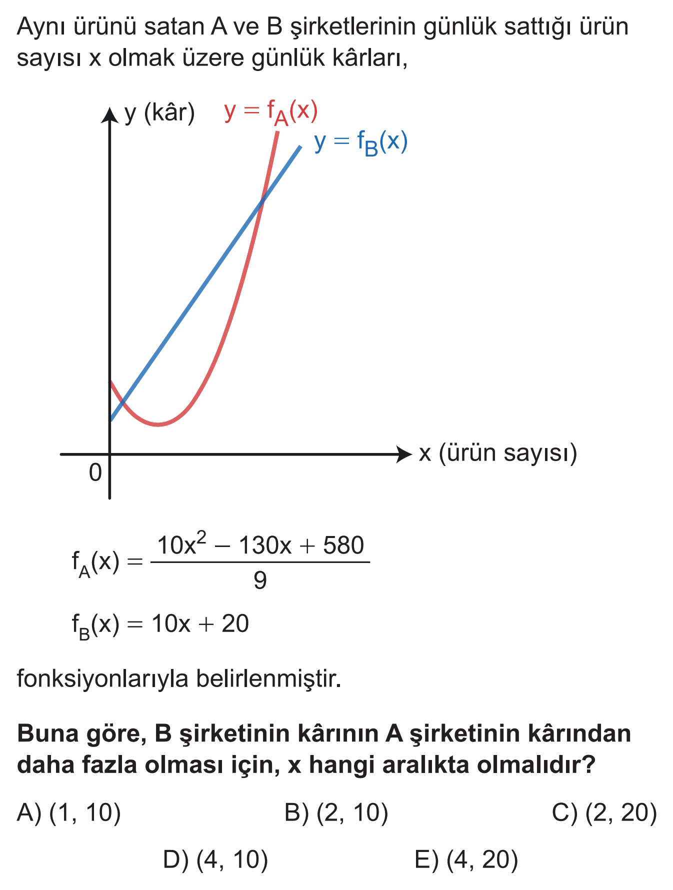
Çözüm
- $f_B(x)\gt f_A(x)\Rightarrow 90x+180\gt10x^2-130x+580$.
- $10x^2-220x+400\lt0\Rightarrow x^2-22x+40\lt0\Rightarrow(x-2)(x-20)\lt0$.
- $2\lt x\lt20$ (C).
Cevap: C
Soru 14Cevap: B
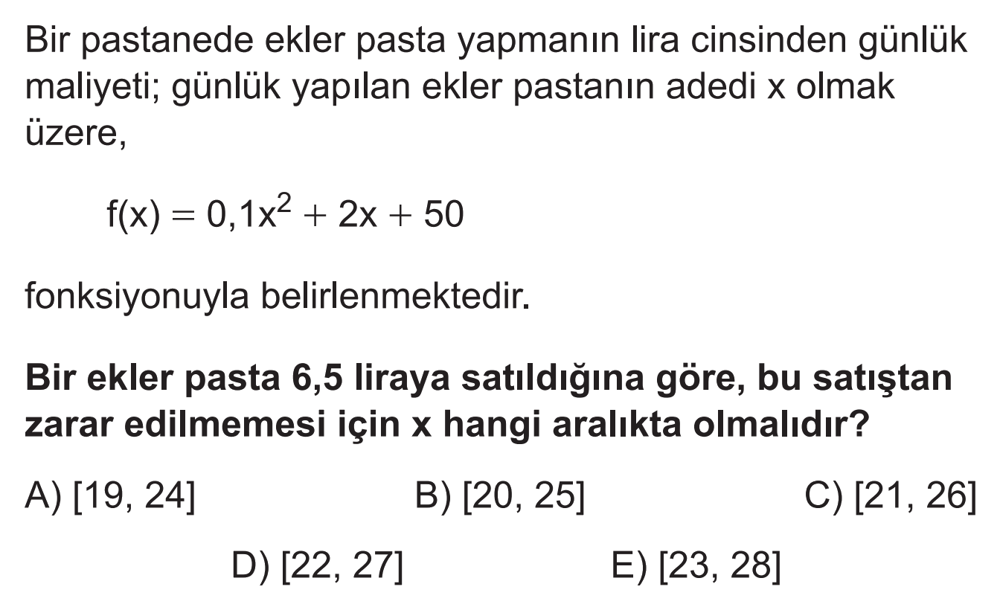
Çözüm
- Zarar olmaması için gelir ≥ maliyet: $6{,}5x\ge0{,}1x^2+2x+50$.
- $0{,}1x^2-4{,}5x+50\le0\Rightarrow x^2-45x+500\le0\Rightarrow(x-20)(x-25)\le0$.
- $20\le x\le25$ (B).
Cevap: B
Soru 15Cevap: B
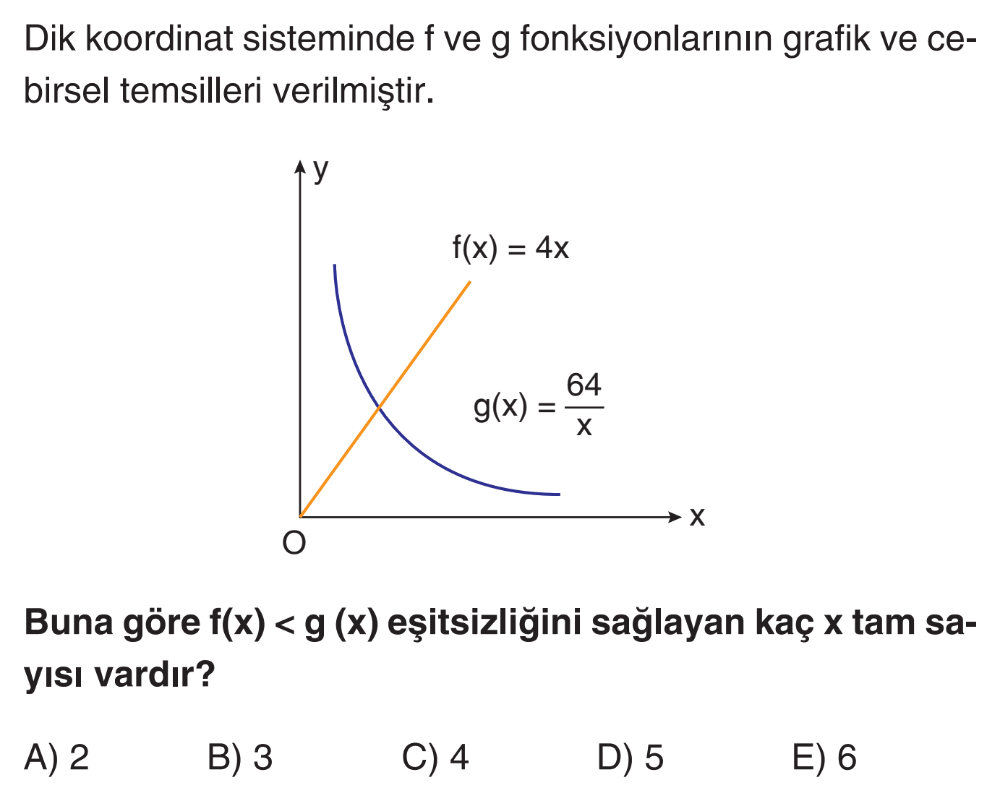
Çözüm
- $x\gt0$ için $4x\lt\dfrac{64}x\Rightarrow4x^2\lt64$.
- $x^2\lt16\Rightarrow0\lt x\lt4$.
- Tam sayılar $1,2,3$: $3$ tane (B).
Cevap: B
Soru 16Cevap: B
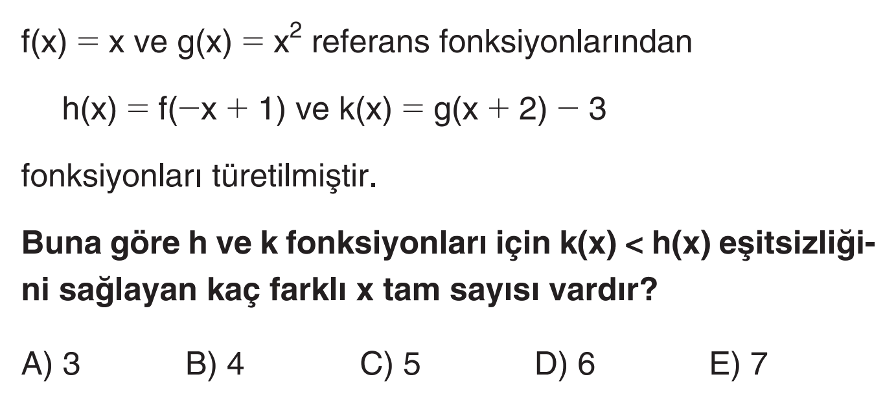
Çözüm
- $h(x)=f(-x+1)=-x+1$, $k(x)=g(x+2)-3=(x+2)^2-3$.
- $(x+2)^2-3\lt-x+1\Rightarrow x^2+5x\lt0\Rightarrow-5\lt x\lt0$.
- Tam sayılar $-4,-3,-2,-1$: $4$ tane (B).
Cevap: B
Soru 17Cevap: A
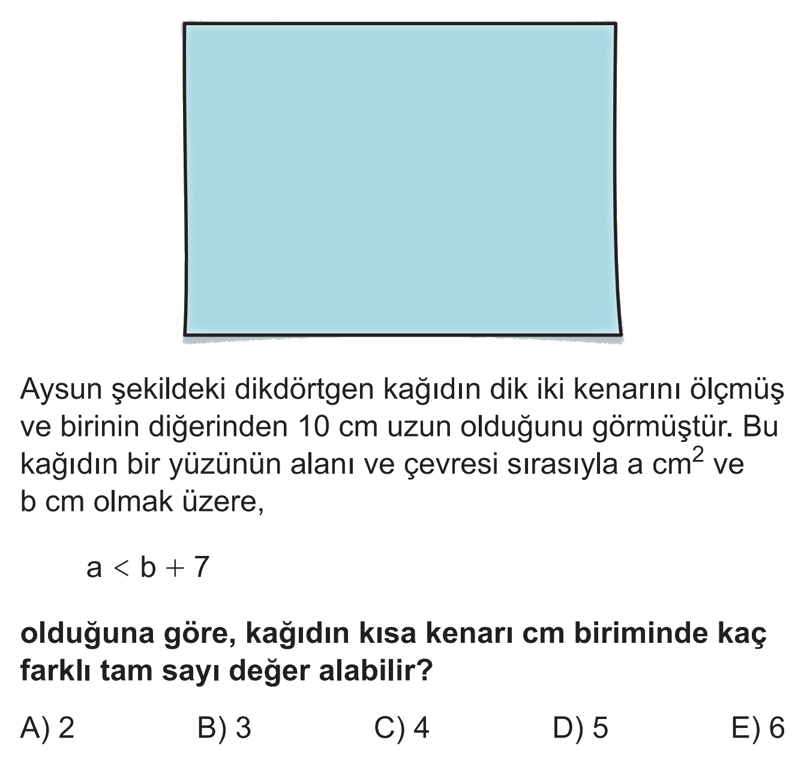
Çözüm
- Kısa kenar $x$, uzun kenar $x+10$: $a=x(x+10)$, $b=4x+20$.
- $x^2+10x\lt4x+27\Rightarrow x^2+6x-27\lt0\Rightarrow(x+9)(x-3)\lt0$.
- $x\gt0$ ile $0\lt x\lt3$: tam değerler $1,2$, yani $2$ tane (A).
Cevap: A
Soru 18Cevap: A
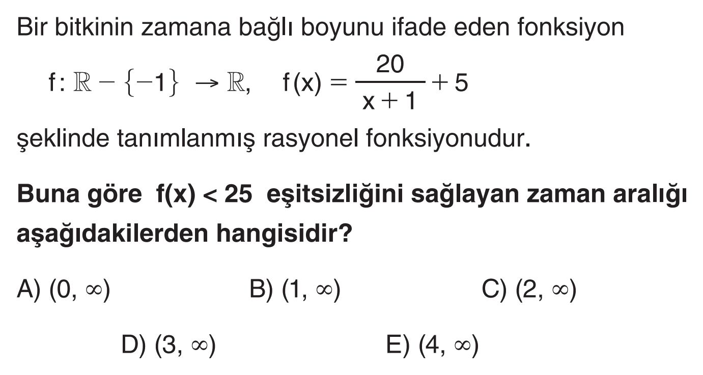
Çözüm
- Zaman pozitif: $x\gt0$, böylece $x+1\gt0$.
- $\dfrac{20}{x+1}+5\lt25\Rightarrow\dfrac{20}{x+1}\lt20\Rightarrow x+1\gt1$.
- $x\gt0$: $(0,\infty)$ (A).
Cevap: A
Soru 19Cevap: D
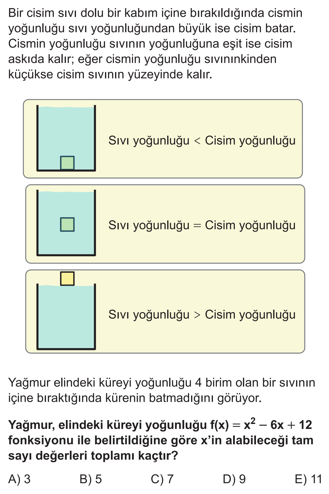
Çözüm
- Küre batmıyorsa yoğunluğu sıvınınkinden büyük değildir: $x^2-6x+12\le4$.
- $x^2-6x+8\le0\Rightarrow(x-2)(x-4)\le0\Rightarrow2\le x\le4$.
- Tam sayılar $2,3,4$; toplam $9$ (D).
Cevap: D
Soru 20Cevap: A
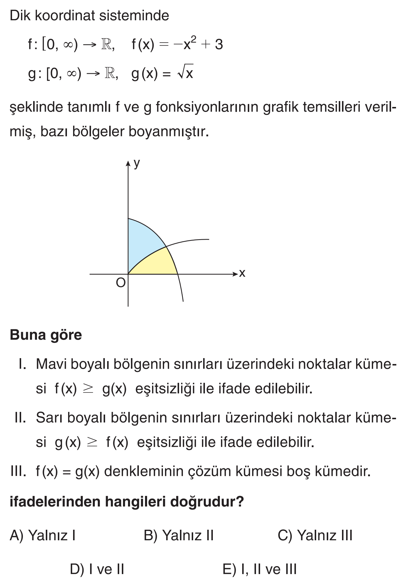
Çözüm
- Mavi bölgede $y$ ekseninden kesişim noktasına kadar parabol üstte, karekök altta: sınırlar $f(x)\ge g(x)$ ile ifade edilir (I doğru).
- Sarı bölge karekök eğrisinin altında ve parabolün de altında kalan kısımdır; $g\ge f$ ile tanımlanamaz (II yanlış).
- Grafikler kesiştiğinden $f(x)=g(x)$'in çözümü vardır (III yanlış). Cevap A.
Cevap: A
Soru 21Cevap: E
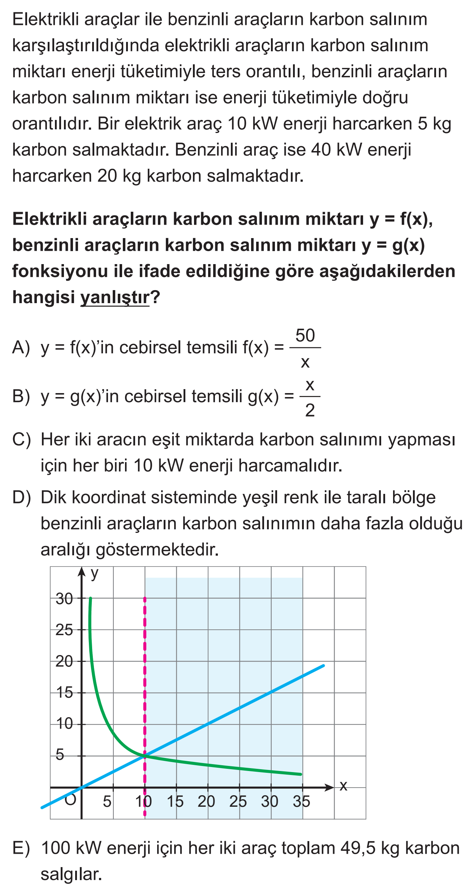
Çözüm
- Ters orantı: $f(x)=\dfrac kx$, $f(10)=5\Rightarrow k=50$; doğru orantı: $g(40)=20\Rightarrow g(x)=\dfrac x2$ (A, B doğru).
- $\dfrac{50}x=\dfrac x2\Rightarrow x=10$ (C doğru); $x\gt10$'da $g\gt f$ (D doğru).
- $f(100)+g(100)=0{,}5+50=50{,}5$ kg: E yanlıştır.
Cevap: E
Soru 22Cevap: C
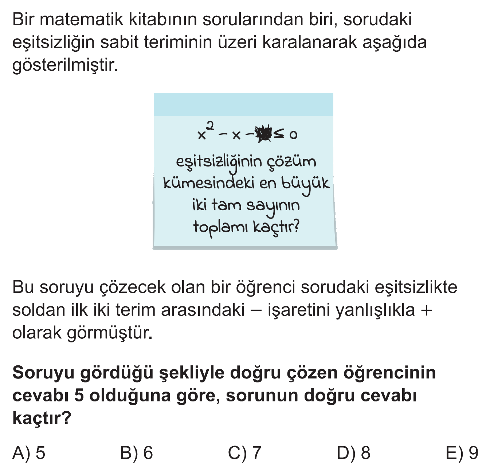
Çözüm
- Yanlış okunan $x^2+x-c\le0$'ın kökleri $r_1\lt r_2$ ve $r_1+r_2=-1$; en büyük iki tam sayı $2,3$ ise $3\le r_2\lt4$.
- Doğru eşitsizlik $x^2-x-c\le0$'ın kökleri $-r_2$ ve $-r_1=1+r_2$: çözüm $[-r_2,\,1+r_2]$, $4\le1+r_2\lt5$.
- En büyük iki tam sayı $3$ ve $4$; toplam $7$ (C).
Cevap: C
Soru 23Cevap: D
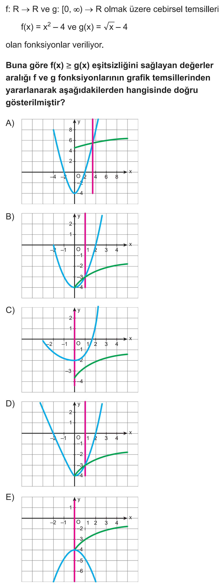
Çözüm
- $x^2-4\ge\sqrt x-4\iff x^2\ge\sqrt x$, $x\ge0$.
- $x^4\ge x\iff x(x^3-1)\ge0\Rightarrow x=0$ ya da $x\ge1$.
- Grafiklerin kesiştiği $x=1$'den sonrasını boyayan çizim D.
Cevap: D
Soru 24Cevap: C
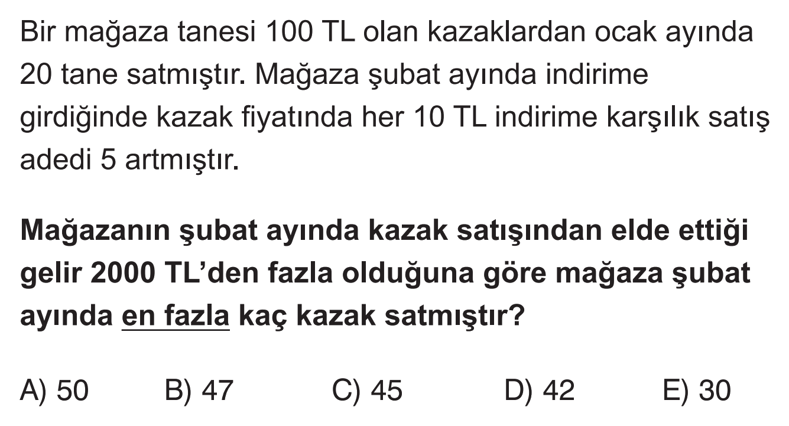
Çözüm
- $n$ indirimde fiyat $100-10n$, satış $20+5n$: gelir $50(10-n)(4+n)$.
- $50(10-n)(4+n)\gt2000\Rightarrow-n^2+6n+40\gt40\Rightarrow n(6-n)\gt0$.
- $0\lt n\lt6$: en çok $n=5$, satış $20+25=45$ (C).
Cevap: C